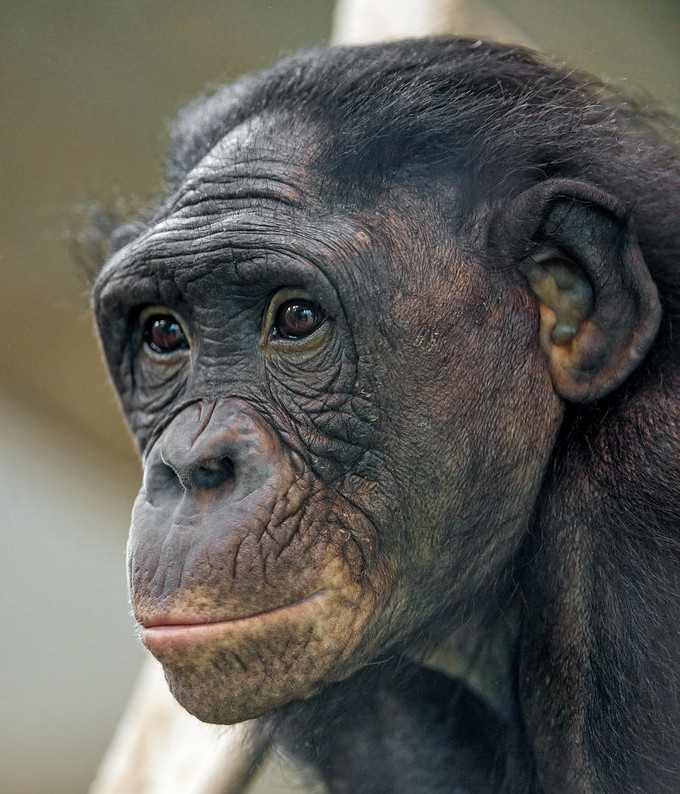

Photo by Jesper Aggergaard on UnsplashThe bonobo (/bəˈnoʊboʊ, ˈbɒnəboʊ/; Pan paniscus), also historically called the pygmy chimpanzee and less often, the dwarf or gracile chimpanzee,[3] is an endangered great ape and one of the two species making up the genus Pan; the other being the common chimpanzee (Pan troglodytes).[4] Although bonobos are not a subspecies of chimpanzee (Pan troglodytes), but rather a distinct species in their own right, both species are sometimes referred to collectively using the generalized term chimpanzees, or chimps. Taxonomically, the members of the chimpanzee/bonobo subtribe Panina (comprised entirely by the genus Pan) are collectively termed panins.[5][6]
The bonobo is distinguished by relatively long legs, pink lips, dark face, tail-tuft through adulthood, and parted long hair on its head. The bonobo is found in a 500,000 km2 (190,000 sq mi) area of the Congo Basin in the Democratic Republic of the Congo, Central Africa. The species is omnivorous and inhabits primary and secondary forests, including seasonally inundated swamp forests. Because of political instability in the region and the timidity of bonobos, there has been relatively little field work done observing the species in its natural habitat.
Along with the common chimpanzee, the bonobo is the closest extant relative to humans.[4] As the two species are not proficient swimmers, the formation of the Congo River 1.5–2 million years ago possibly led to the speciation of the bonobo. Bonobos live south of the river, and thereby were separated from the ancestors of the common chimpanzee, which live north of the river. There are no concrete data on population numbers, but the estimate is between 29,500 and 50,000 individuals. The species is listed as Endangered on the IUCN Red List and is threatened by habitat destruction and human population growth and movement, though commercial poaching is the most prominent threat. Bonobos typically live 40 years in captivity; their lifespan in the wild is unknown, but it is almost certainly much shorter.
Should I get a pet Bobobo?
Pros
Cons
Along with the Chimpanzee, it is the closest living relative to the 1